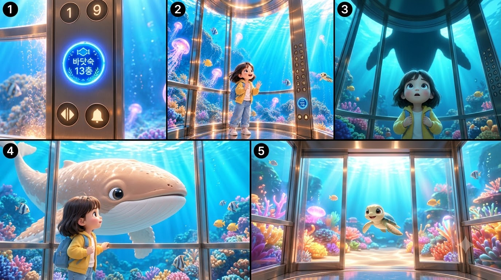

02 / STORY
장면 구성
바닷속 13층으로 향하는 짧은 영상의 흐름을 정리했습니다.

SELECTED WORK 02 / AI SHORT FILM

엘리베이터 문이 열리자,
바닷속의 새로운 친구들이 기다리고 있었어요.
나루가 또리와 쿠우를 만나 바닷속 13층으로 향하는 29초짜리 세로형 AI 영상입니다. 장면의 흐름과 캐릭터의 표정, 바다의 색감을 하나의 짧은 모험으로 엮었습니다.
재생 버튼을 누르면 소리와 함께 감상할 수 있습니다.
AI 영상 제작 · Google Flow
바닷속 13층으로 향하는 짧은 영상의 흐름을 정리했습니다.

표정과 움직임을 정리한 캐릭터 시트입니다.